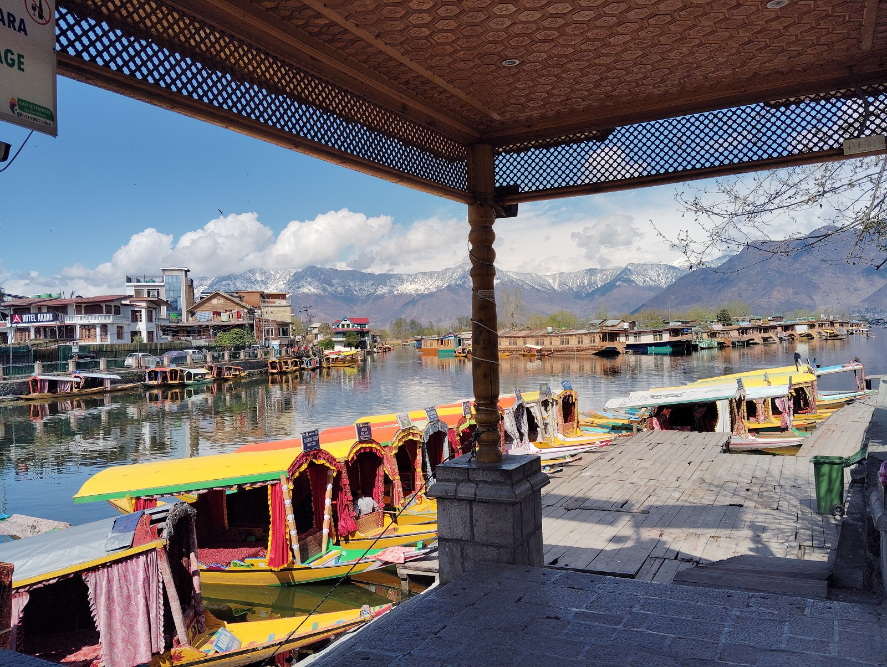

Six double rooms
Room availability, rates and occupancy should be confirmed directly before booking.
HOSPITALITY · SRINAGAR
A place to pause, discover Srinagar and begin your own journey through Kashmir.
SALEEM GUEST HOUSE
Saleem Guest House is in the Dalgate area, near Dal Lake, opposite Ghat No. 1 and facing the Shankaracharya Temple. We welcome enquiries from travellers planning a visit to Kashmir.
Room availability, rates and occupancy should be confirmed directly before booking.
Previously listed amenities include attached bathrooms, hot and cold water and Wi-Fi. Please confirm current availability when enquiring.
Ask us about local transport and Shikara arrangements when planning your visit.
A GLIMPSE OF SRINAGAR



These photographs show the surrounding region. We will add verified room and building photographs when available, rather than presenting landscape pictures as guest-room images.
YOUR KASHMIR STAY
Share your travel dates, number of guests and room requirements. We will respond with the details we can confirm.
Send a stay enquiry →PLAN A VISIT
Please enquire for current rates, availability, amenities and arrival details. No reservation is confirmed until we reply.
Enquire by email